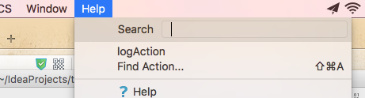
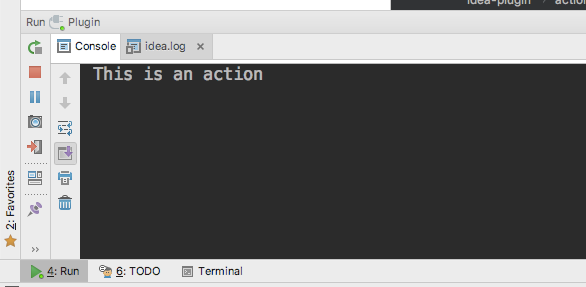
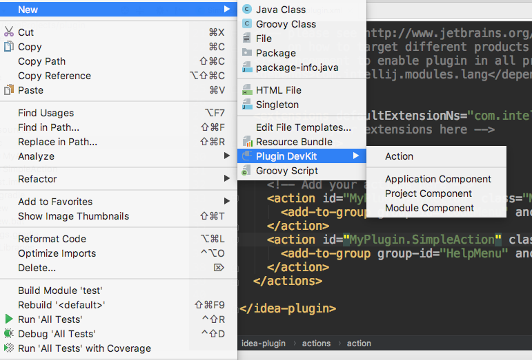
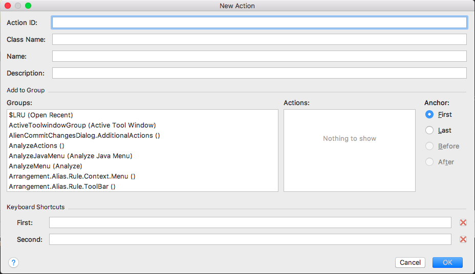
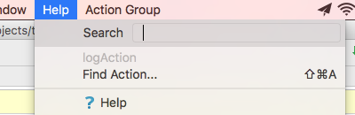
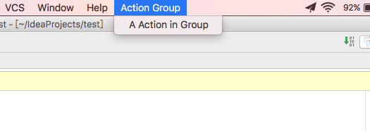
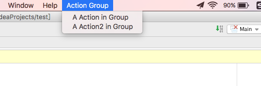
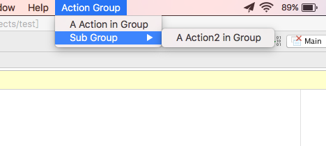
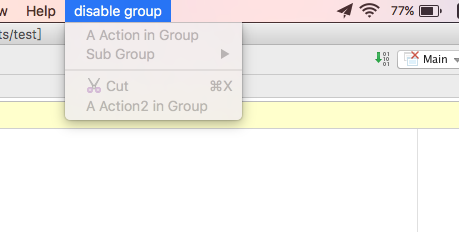

Action System包含最基础的Action，还有Action Group
Action
什么是Action
我们自己的代码逻辑，在IDE的运行环境下执行，我们的代码便成了它的“插件”，可是怎样才能让IDE执行我们的代码逻辑？Intellij提供了一个很基础的组件 – Action。
Action，直译就是动作，是我们最常见到的组件，也是最普通的代码执行的入口。
所有菜单和工具栏的点击按钮背后就是一个Action
所以我一般都把它想象成Android里的OnClickListener。同样地，要自定义自己的Action，只需要继承AnAction类并把逻辑放在actionPerformed方法即可。
最简单的Action
public class SimpleAction extends AnAction { @Override public void actionPerformed(AnActionEvent e) { // TODO: insert action logic here System.out.println("This is an action"); } }
|
上一篇文章说过，Action是需要在plugin.xml注册的，所以，要让这个Action跑起来，还需要在plugin.xml的actions标签添加以下内容
<action id="MyPlugin.SimpleAction" class="SimpleAction" text="logAction" description="just log to console"> <add-to-group group-id="HelpMenu" anchor="first"/> </action>
|
解释一下action标签的属性的含义
- id:这个Action的唯一标识，所有的id不能重复，IDE通过id区分不同的Action
- class:这个Action的类
- text:这个Action显示在菜单或工具栏上的文字
- description:这个Action的描述
然后编译运行：
- 如果没有用gradle点击运行按钮即可
- 使用了gradle
- 点击gradle的tool window，找到Tasks / intellij / runIdea，双击
runIdea
- 命令行执行
gradle runIdea（gradle得在你的PATH里）
后文将默认使用gradle
一切正常的话，一个新的IDE实例便会运行起来，运行的版本取决于你在build.gradle指定的版本
现在，在Help菜单栏的第一个条目就是我们的Action

点击logAction，在控制台（我们编译插件的IDE实例）就能看到输出

新建Action向导
新建一个Action那么麻烦，Intellij那些聪明的工程师怎么会无动于衷！
Plugin Dev插件提供了一个新建Action的向导，好像新建Activity那样方便简单，填写好相关信息，Action类和plugin.xml就还帮我们建好啦


更新Action的状态
Action中除了actionPerformed外也值得关注的就是update方法了，系统通过调用Action的update方法得到Action的状态，从而决定怎样在菜单上显示Action
@Override public void update(AnActionEvent e) { Editor editor = e.getData(PlatformDataKeys.EDITOR); if (editor != null) { int lineCount = editor.getDocument().getLineCount(); if (lineCount > 20) { e.getPresentation().setEnabled(true); } else { e.getPresentation().setEnabled(false); } } }
|
上面的代码块意思是当前editor打开的文件的行数大于20行才使Action可用，否则不可用，Action不可用的话是会变灰色的

Presentation还有一系列方法改变Action的“外貌”：
presentation.setDescription(); presentation.setIcon(); presentation.setText(); presentation.setVisible();
|
Action Group
Action Group含有一个或几个Action Item，每一个Action都属于一个Action Group。Action Group可以被添加到菜单栏的最顶层，也可以被添加到其他Action Group，预设的Action Group非常多，除了菜单栏上的File、Edit、View等等外，还有很多Intellij已经定义的Action Group，如上图New Action向导所示，Groups滚动框下拉，可以看到非常多的Action Group。
现在，手动定义一个Action Group
<actions> <group id="com.example.actiongroup" text="Action Group" description="this is a action group"> </group> </actions>
|
<group>标签同样要被包裹在actions标签内，id是注册Action时的要添加进的Group的id，现在往com.example.actiongroup的Group里加入Action
<group id="com.example.actiongroup" text="Action Group" description="this is a action group"> <action class="GroupAction" id="com.example.actiongroup.groupaction" text="A Action in Group" /> <add-to-group group-id="MainMenu"/> </group>
|
<action>直接写在<group>内的话就默认是加入这个group了，同样，group也要add到已有的group里面，才能让它在菜单里显示出来。这里加入的是主菜单，也就是最顶层的菜单，运行效果如下

次级菜单展开
现在添加次级菜单如下
<group id="com.example.actiongroup" text="Action Group" description="this is a action group"> <action class="GroupAction" id="com.example.actiongroup.groupaction" text="A Action in Group"/> <group id="com.example.subgroup" text="Sub Group"> <action class="GroupAction2" id="com.example.actiongroup.groupaction2" text="A Action2 in Group"/> </group> <add-to-group group-id="MainMenu"/> </group>
|
可是结果是这样的

运行结果和我们的直觉不一样啊！！要如我们所愿，像次级菜单展开的话，还需要设置一个popup属性，把subgroup的popup属性设置为true即可破之

添加分隔线
为相似功能的菜单项添加分隔线很简单，在<group>下添加<separator/>标签即可
引用Action
<group id="com.example.actiongroup" text="Action Group" description="this is a action group"> <action class="GroupAction" id="com.example.actiongroup.groupaction" text="A Action in Group"/> <group id="com.example.subgroup" text="Sub Group" popup="true"> <action class="GroupAction2" id="com.example.actiongroup.groupaction2" text="A Action2 in Group"/> </group> <separator/> <reference ref="$Cut"/> <add-to-group group-id="MainMenu"/> </group>
|
<reference>用于引用已有的Action，包括系统定义的和插件定义的Action，如上所示添加了剪切的Action
同级的Action不可引用
与<reference>定义在同一个级别的Action不可以被引用，上面的代码块中GroupAction是不可以被引用的，但是GroupAction2可以被引用
更新Action Group状态
Action Group同样通过update方法更新状态，不过首先先要给Action Group指定一个class，class继承DefaultActionGroup
<group id="com.example.actiongroup" class="MyActionGroup" text="Action Group" description="this is a action group"> <action class="GroupAction" id="com.example.actiongroup.groupaction" text="A Action in Group"/> <group id="com.example.subgroup" text="Sub Group" popup="true"> <action class="GroupAction2" id="com.example.actiongroup.groupaction2" text="A Action2 in Group"/> </group> <separator/> <reference ref="$Cut"/> <reference ref="com.example.actiongroup.groupaction2"/> <add-to-group group-id="MainMenu"/> </group>
|
改变text和可用性
@Override public void update(AnActionEvent e) { e.getPresentation().setText("disable group"); e.getPresentation().setEnabled(false); }
|

动态添加Action
如果需要Action Group的Action随条件的不同而不同，同样需要设置group的class，不过扩展于ActionGroup类，并复写getChildren方法，即可动态的提供Action
@NotNull @Override public AnAction[] getChildren(AnActionEvent anActionEvent) { return new AnAction[]{new MyAction()}; }
|